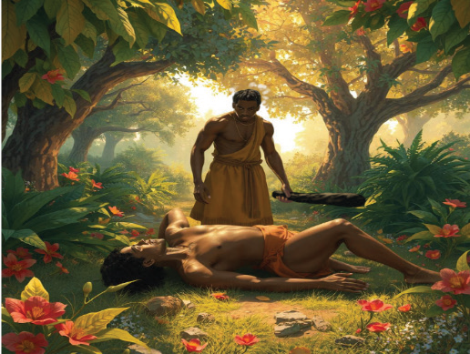

Then the Lord asked Cain “where is your brother?” Cain answered, “I don’t know; am I my brother’s keeper?” God told him that the voice of his brother’s blood is crying over from the ground. God cursed him and the ground which has received his brother’s blood. God made him become fugitive and a wonderer on the earth. However, the Lord protected Cain and put a mark on him so that no one who came upon him would kill him. Cain then went away to live in the land at Nod east of Eden.
Everything we use belongs to God. We use it freely to glorify God and to expand His kingdom. Offering to God is one of the most important acts of worshiping Him. God is very happy to receive our offerings of love and gratitude. God is pleased with those who offer Him faithfully. When we offer, we show our love, obedience, respect, and faithfulness to God. The murder of Abel by Cain is the consequence of the sins of Adam and Eve. From Adam and Eve sin spread to their generations.
Activity 3.4
Use library and internet sources. Read Genesis 4, then describe the story of Cain and Abel.
Importance of faithfulness in offering to God
The story of Cain and Abel presents to the current generation a number of insights such as: Faithful offering brings God’s blessings as was the case for Abel. He was blessed by God because he offered faithfully. It draws one closer to God. It brings God’s favour and makes one become rich in every way: spiritually, socially, and materially. On the